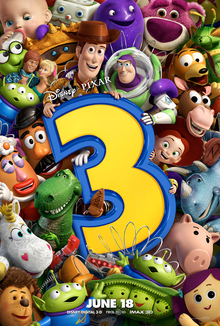
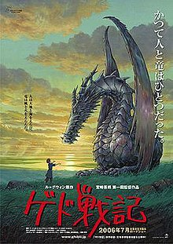
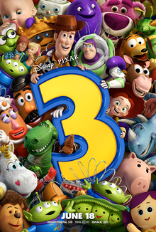
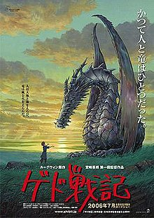
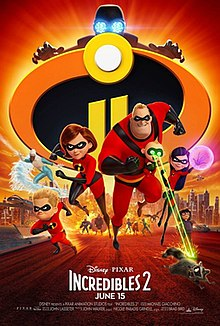
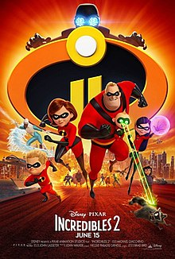
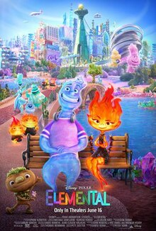
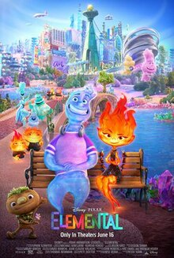

Generalidades:
La Era Dorada de Disney, que abarca desde 1937 hasta 1942, representa el período fundacional que consolidó a Walt Disney Studios como pioneros en la animación cinematográfica. Esta era produjo un total de 7 películas, todas supervisadas personalmente por Walt Disney.
Estilo Visual:
La ilustración toma el centro del escenario en esta era, con 5 de las 7 películas que emplean representaciones artísticas dibujadas a mano en sus carteles. El enfoque estilizado, con 5 instancias, contribuye a un lenguaje visual caprichoso y fantástico, alineándose con las narrativas encantadoras características de las primeras obras de Disney.
Personajes y Temas:
Los personajes principales presentan predominantemente hombres y humanos, mostrando un equilibrio entre los protagonistas infantiles y adultos. En particular, los personajes principales no humanos, presentes en 3 instancias, destacan la amplitud imaginativa de la narración de Disney durante esta era. El vuelo, un tema que denota personajes en el aire, se representa sutilmente una vez, agregando un elemento de maravilla a la narrativa visual.
Utilización de Etiquetas:
La magia, un elemento esencial de la narración de Disney, se integra sutilmente en una película. El uso de texto en carteles, ya sea para dar sabor atmosférico, promoción o menciones de cartera, demuestra una comprensión temprana de la importancia de los elementos textuales en el marketing.
Diversidad y Representación:
Si bien los personajes no humanos son predominantes, la representación de las mujeres, tanto como personajes principales como no principales, es relativamente moderada. La representación negra, marcada por la etiqueta "persona_negra", está ausente en esta era.
Impresión General:
La Era Dorada sienta las bases de la destreza visual de la narración de Disney, con un fuerte énfasis en las ilustraciones dibujadas a mano y los diseños estilizados. El enfoque temático de la era en la magia y los personajes imaginativos contribuye al encanto atemporal que define el legado de Disney. La ausencia de ciertas etiquetas se alinea con el contexto de la era, pero sienta las bases para futuros desarrollos en el enfoque del estudio sobre la diversidad y la representación.
Generalidades:
La Era de la Guerra, que abarca desde 1943 hasta 1949, refleja un período desafiante para Disney Studios debido al impacto de la Segunda Guerra Mundial. Con 8 películas producidas durante este tiempo, el estudio enfrentó limitaciones como presupuestos más bajos y equipos de animación más pequeños, directamente influenciados por el contexto mundial de la guerra.
Estilo Visual:
La ilustración sigue siendo una característica dominante, con 6 de las 8 películas que utilizan representaciones artísticas dibujadas a mano en sus carteles. Sin embargo, es notable un cambio hacia el realismo, con 5 instancias de diseños realistas de carteles. Este cambio puede ser indicativo de un enfoque matizado de la narración durante un período marcado por el conflicto global.
Personajes y Temas:
Los personajes masculinos toman la delantera, con 6 instancias, y un enfoque notable en los protagonistas humanos. La representación de personajes principales no humanos disminuye, lo que podría reflejar un enfoque más realista en respuesta a los temas de la guerra. La presencia del vuelo permanece, lo que indica un sentido continuo de maravilla frente a la adversidad.
Utilización de Etiquetas:
La magia, aunque todavía presente, se vuelve menos prominente en esta era. El aumento del uso de un diseño realista se alinea con la necesidad de un lenguaje visual más relatable y realista durante la guerra. Los elementos textuales todavía se utilizan para dar sabor, contribuyendo a la narración dentro de las limitaciones de los temas relacionados con la guerra.
Diversidad y Representación:
La representación de las mujeres en roles no principales ve un aumento, lo que sugiere un alcance más amplio en la representación de personajes. En particular, la presencia de una persona negra en una película significa un paso temprano hacia una representación más inclusiva.
Impresión General:
La Era de la Guerra refleja la adaptación de Disney a circunstancias externas desafiantes, con un cambio notable hacia el realismo en el estilo visual. El énfasis en los protagonistas masculinos y humanos se alinea con una narrativa más relatable en el contexto de un conflicto global. La participación de la era en la propaganda relacionada con la guerra contextualiza aún más los desafíos que enfrentaron los estudios de Disney durante este período de transformación.

Generalidades:
La Era de Plata de Disney, que abarca desde 1950 hasta 1967, marca un resurgimiento significativo para el estudio, que vuelve a la producción de largometrajes de alto presupuesto. Esta era se distingue por su exquisita animación con fondos intrincados y colores suaves. La era incluye un total de 9 películas, y es notable por ser el último período supervisado personalmente por Walt Disney.
Estilo Visual:
La ilustración sigue dominando, con 6 de las 9 películas que presentan representaciones artísticas dibujadas a mano en sus carteles. Si bien los diseños estilizados y realistas coexisten, el énfasis en los fondos ornamentados y los colores suaves significa una dedicación a la belleza y sofisticación visual.
Personajes y Temas:
Los personajes masculinos persisten como protagonistas prominentes, con 6 instancias, acompañados de una representación equilibrada de personajes principales infantiles y adultos. El regreso de personajes principales no humanos sugiere un renacimiento de la narración fantástica. La presencia del vuelo permanece, contribuyendo a los temas encantadores e imaginativos de la Era de Plata.
Utilización de Etiquetas:
La magia, aunque presente, se vuelve menos prominente en esta era, lo que podría reflejar un cambio hacia narrativas más realistas. El uso de texto para dar sabor, promoción y elementos de cartera indica un enfoque estratégico continuo para el diseño de carteles.
Diversidad y Representación:
La Era de Plata exhibe un aumento significativo en la representación de personajes femeninos, tanto en roles principales como no principales. Esta era muestra un elenco más diverso, con la inclusión de personajes no humanos y la representación de una persona negra.
Legado y Culminación:
La muerte de Walt Disney marca la conclusión de la Era de Plata, siendo "The Jungle Book" la última película supervisada personalmente por Disney. Este período representa la culminación de la dedicación del estudio a la belleza artística y la narración, sentando las bases para el panorama en evolución de la animación de Disney.
Impresión General:
La Era de Plata es un testimonio del compromiso de Disney con la excelencia artística y la narración, caracterizada por ilustraciones exuberantes, representación diversa de personajes y un regreso a la grandeza de las producciones de alto presupuesto. El legado de esta era está entrelazado con la participación personal de Walt Disney, lo que la convierte en un período fundamental y emocionalmente resonante en la historia de la animación de Disney.

Generalidades:
La Era de Bronce de Disney, que abarca desde 1968 hasta 1977, representa una partida de los cuentos de hadas, adentrándose en narrativas más oscuras y seculares. Con un total de 6 películas, esta era se caracteriza por un cambio en las técnicas de animación, pasando de las películas entintadas a mano al uso de la xerografía.
Estilo Visual:
La ilustración sigue siendo predominante, con 4 de las 6 películas que presentan representaciones artísticas dibujadas a mano en sus carteles. El enfoque estilizado es consistente, manteniendo un lenguaje visual distintivo. Se observa un cambio notable hacia el realismo, con 1 película que adopta un diseño más realista, reflejando la partida de la era de los temas tradicionales de los cuentos de hadas.
Personajes y Temas:
Los protagonistas masculinos siguen dominando, con 5 instancias, reflejando una tendencia constante. La inclusión de personajes femeninos disminuye, lo que podría alinearse con la exploración de temas más oscuros y maduros de la era. El vuelo se convierte en un tema más prominente, apareciendo en 2 películas, contribuyendo a los elementos fantásticos de la Era de Bronce.
Utilización de Etiquetas:
Los elementos textuales, utilizados para dar sabor, siguen siendo consistentes en esta era, contribuyendo al enfoque de la narración. El uso continuo de diseños estilizados y la inclusión del vuelo sugieren un equilibrio entre la narración imaginativa y temas más maduros.
Cambio en el Tono Narrativo:
La partida de la Era de Bronce de los cuentos de hadas y la exploración de temas más oscuros y seculares representan un cambio significativo en el enfoque narrativo de Disney. Esta era muestra la voluntad del estudio de experimentar con narrativas que se alejan de las convenciones tradicionales.
Avances Tecnológicos:
Un cambio tecnológico notable durante la Era de Bronce es la transición de películas entintadas a mano a la xerografía. Este cambio en las técnicas de animación refleja la capacidad de adaptación de Disney y su disposición a aceptar los avances en el campo.
Impresión General:
La Era de Bronce emerge como un período de experimentación y evolución para Disney, marcado por una partida de los temas de los cuentos de hadas y un abrazo de narrativas más oscuras y maduras. El estilo visual de la era mantiene su calidad artística mientras se adapta a las nuevas tecnologías de animación. La presencia del vuelo y el uso continuo de diseños estilizados insinúan un delicado equilibrio entre mantener las raíces imaginativas de Disney y explorar nuevos territorios creativos.
Generalidades:
La Era Oscura de Disney, que abarca desde 1978 hasta 1988, se caracteriza por un período en el que el estudio enfrentó desafíos, tanto creativos como en términos de recepción de la audiencia. Con un total de 5 películas, esta era presenció una partida de los temas alegres y fantásticos, con películas que adoptaron un tono más serio.
Estilo Visual:
La ilustración sigue siendo una característica, aunque con una presencia reducida, que aparece en 2 de las 5 películas. La acción en vivo se introduce en una película, reflejando una partida del formato animado tradicional. Los diseños estilizados persisten, manteniendo un lenguaje visual distintivo que se alinea con las narrativas más serias de la era.
Personajes y Temas:
Los protagonistas masculinos siguen desempeñando un papel importante, apareciendo en 4 de las 5 películas. La disminución en la representación de personajes femeninos, tanto en roles principales como no principales, es notable y contribuye al cambio de la era hacia una narración más seria. La prevalencia de personajes no humanos permanece, lo que sugiere una exploración continua de elementos imaginativos.
Utilización de Etiquetas:
La magia, aunque presente, se vuelve menos prominente en esta era, reflejando el cambio hacia narrativas más realistas y serias. Los diseños estilizados y los elementos textuales para dar sabor persisten, contribuyendo al enfoque de la narración, que es más sobrio en comparación con las eras anteriores.
Cambio en el Tono Narrativo:
La Era Oscura se caracteriza por una partida de las narrativas alegres y caprichosas tradicionalmente asociadas con Disney. Las películas de la era se caracterizan por un tono más serio y maduro, desafiando las expectativas de la audiencia acostumbrada a las obras anteriores del estudio.
Recepción de la Audiencia:
La nota sobre las películas de esta era es "más seria de lo que los fanáticos estaban acostumbrados" refleja los desafíos que enfrentó Disney durante este período. El cambio de tono podría haber afectado las expectativas y la recepción de la audiencia.
Impresión General:
La Era Oscura representa un período desafiante para Disney, marcado por una partida del estilo característico del estudio y un cambio hacia una narración más seria y madura. La era, aunque enfrenta dificultades, muestra la capacidad de adaptación de Disney y su disposición a experimentar con tonos narrativos, sentando las bases para futuras transformaciones en el enfoque del estudio.

Generalidades:
El Renacimiento de Disney, que abarca desde 1989 hasta 1999, representa un período de notable resurgimiento y triunfo creativo para Disney. Con un total de 17 películas, cada producción dentro de esta era se considera un éxito de taquilla, marcando un cambio significativo en la fortuna del estudio.
Estilo Visual:
La ilustración sigue siendo una característica dominante, con 11 de las 17 películas que presentan representaciones artísticas dibujadas a mano en sus carteles. La era introduce CGI en 3 películas, reflejando los avances en la tecnología de animación. Los diseños estilizados persisten, con una armoniosa mezcla de magia y realismo, mostrando el compromiso de la era tanto con la narración visual tradicional como moderna.
Personajes y Temas:
Los protagonistas masculinos siguen siendo prominentes, apareciendo en 13 de las 17 películas. La representación de las mujeres en roles principales ve un aumento, alineándose con un enfoque más amplio y más inclusivo de la dinámica de los personajes. El Renacimiento mantiene un equilibrio entre personajes humanos y no humanos, contribuyendo a la diversidad de la narración.
Utilización de Etiquetas:
La magia, los diseños estilizados y los elementos textuales para dar sabor siguen siendo componentes clave, reflejando una estrategia visual y narrativa cohesiva. La inclusión de CGI muestra la disposición de Disney a adoptar los avances tecnológicos sin dejar de ser fiel a sus raíces artísticas tradicionales.
Éxito Comercial:
Un aspecto notable del Renacimiento de Disney es el éxito sin precedentes de cada película en esta era. La combinación de una narración cautivadora, técnicas de animación innovadoras y personajes memorables resonó fuertemente con la audiencia, consolidando la posición de Disney como un gigante de la industria de la animación.
Colaboración con Pixar:
El Renacimiento de Disney coincide con el auge de Pixar, un momento crucial ya que el estudio comenzó a producir películas animadas digitalmente. El éxito de Toy Story, A Bug's Life y Toy Story 2 durante este período representa una colaboración innovadora que daría forma al futuro de la realización de películas animadas.
Impresión General:
El Renacimiento de Disney es una era dorada, marcada por triunfos tanto críticos como comerciales. La era no solo revitalizó el departamento de animación de Disney, sino que también sentó las bases para colaboraciones e innovaciones que definirían el panorama de las películas animadas en los próximos años. La armoniosa mezcla de ilustración tradicional y las emergentes tecnologías CGI muestran la capacidad de adaptación de Disney y el compromiso de llevar los límites de la narración animada.


Generalidades:
La era del Post Renacimiento, que abarca desde 2000 hasta 2009, representa un período significativo de transición para Disney. Con un total de 34 películas, esta era sirve como puente entre la animación tradicional y la creciente prominencia de CGI, acompañada de un cambio en las técnicas de narración.
Estilo Visual:
La ilustración y el CGI están representados de manera uniforme, con 12 películas cada uno, lo que refleja la exploración de Disney de los métodos de animación tradicionales y modernos. Los diseños estilizados siguen siendo predominantes, lo que indica una continuidad del enfoque artístico. La inclusión de acción en vivo en 2 películas significa una fase experimental para el estudio.
Personajes y Temas:
Los protagonistas masculinos siguen dominando, apareciendo en 25 de las 34 películas. La era mantiene un equilibrio entre personajes humanos y no humanos, lo que indica una diversidad de narración. La inclusión del vuelo como tema recurrente se alinea con la exploración continua de elementos mágicos y fantásticos de Disney.
Utilización de Etiquetas:
La magia, los diseños estilizados y los elementos textuales para dar sabor persisten, mostrando una consistencia temática con las eras anteriores. La exploración de CGI de la era refleja la adaptación de Disney a los avances tecnológicos y las preferencias cambiantes de la audiencia.
Transición y Desafíos:
Dinosaurio sirve como la primera incursión de Disney en la animación CGI, marcando un momento crucial en la historia del estudio. La era se caracteriza por una transición de la animación tradicional a la CGI y un cambio de los viejos estilos narrativos a nuevos enfoques de narración.
Desafíos Comerciales:
A pesar de los avances innovadores en la tecnología de animación, las películas de esta era, con la excepción de Lilo & Stitch, enfrentaron desafíos en la taquilla y no alcanzaron una popularidad generalizada. La era refleja los esfuerzos del estudio por encontrar su lugar en un panorama cambiante.
Impresión General:
La era del Post Renacimiento sirve como una fase de transición crucial para Disney, marcada por la experimentación con técnicas de animación y estilos narrativos. La exploración de CGI y acción en vivo de la era insinúa la disposición de Disney a adaptarse a las tendencias de la industria, sentando las bases para una mayor evolución en el enfoque del estudio para la realización de películas animadas. A pesar de enfrentar desafíos comerciales, esta era sienta las bases para los futuros esfuerzos del estudio en animación.
Generalidades:
La Era del Renacimiento, que abarca desde 2010 hasta 2023, emerge como un período de resurgimiento e innovación para Disney. Con un total de 41 películas, esta era se caracteriza por una mezcla de animación tradicional y CGI, un énfasis continuo en diseños estilizados y un enfoque notable en la narración diversa.
Estilo Visual:
CGI toma el centro del escenario en esta era, con 27 de las 41 películas que emplean animación generada por computadora. Los diseños estilizados siguen dominando, enfatizando el compromiso de Disney con un enfoque visualmente distinto y artístico. La inclusión de diseños realistas en 3 películas muestra un equilibrio entre la narración imaginativa y un toque de realismo.
Personajes y Temas:
Los protagonistas masculinos siguen siendo predominantes, apareciendo en 28 de las 41 películas, pero la era muestra un aumento significativo en la representación de personajes femeninos, alineándose con un enfoque narrativo más amplio y más inclusivo. El equilibrio entre personajes humanos y no humanos persiste, contribuyendo a la diversidad de narrativas.
Utilización de Etiquetas:
La magia, los diseños estilizados y los elementos textuales con fines de sabor y cartera siguen siendo componentes integrales de las películas de esta era. El aumento del uso de CGI refleja el compromiso de Disney con los avances tecnológicos en animación.
Impacto Cultural:
La Era del Renacimiento alcanza nuevas alturas con el éxito monumental de Frozen, convirtiéndose en la película animada más taquillera de todos los tiempos. Esta película, junto con otras de la era, contribuye a un impacto cultural que consolida la posición de Disney como un gigante en la narración animada.
Diversidad y Representación:
La era muestra un aumento notable en la representación de personajes femeninos, personajes no humanos y un esfuerzo continuo por retratar una amplia gama de personajes. Si bien hay progresos, se podrían explorar nuevos avances en la representación en futuros esfuerzos.
Impresión General:
La Era del Renacimiento es un testimonio de la capacidad de Disney para adaptarse e innovar, combinando animación tradicional y CGI para crear películas visualmente impresionantes e impactantes culturalmente. El enfoque en la narración diversa y el éxito de Frozen simbolizan una reactivación de las capacidades de narración animada de Disney, sentando las bases para futuros logros en el siempre cambiante panorama de la animación.
 





 



 
